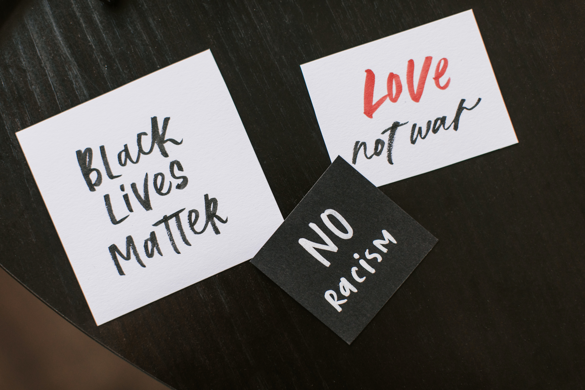

<div class="parent-container">
  <div class="container">
    <div class="text-center">
      <h1>BLACK LIVES MATTER</h1>
      <p>
        Black Lives Matter (BLM) is is a global organization in the US, UK, and
        Canada, whose mission is to eradicate white supremacy and build local
        power to intervene in violence inflicted on black communities by state
        actors and vigilantes. After community-based groups were formed
        following the Ferguson unrest of 2014, Black Lives Matter Global Network
        was established. The Black Lives Matter Global Network Foundation, or
        BLM Global Network Foundation, a nonprofit organization, provides grants
        to support grassroots organizing work by its chapters. exists as a
        decentralized network with over 30 chapters in the United States and
        sister organizations worldwide while a larger Black Lives Matter
        movement exists consisting of various separate like-minded organizations
        such as Dream Defenders and Assata's Daughters. The broader movement and
        its related organizations typically advocate against police violence
        towards black people, as well as for various other policy changes
        considered to be related to black liberation.
      </p>

      

      <p>
        The movement returned to national headlines and gained further
        international attention during the global George Floyd protests in 2020
        following Floyd's death by police officer Derek Chauvin in Minneapolis,
        Minnesota. An estimated 15 million to 26 million people participated
        (though not all are “members” of the organization) in the 2020 Black
        Lives Matters protests in the United States, making Black Lives Matters
        one of the largest movements in U.S. history.
      </p>
    </div>
  </div>
</div>
